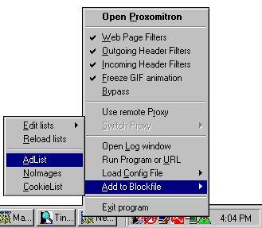

|  | The System Tray is the list of tiny icons on the bottom right-hand corner of your computer's screen. This is normally where Proxomitron lives (as a tiny green triangle staring back at you). If you right-click Proxomitron's icon you'll get a nifty menu of "quick to select" options.
you can also get this same menu by right-clicking on Proxomitron's main window (useful if not runniong in tray mode). |
 Return to main index
Return to main index